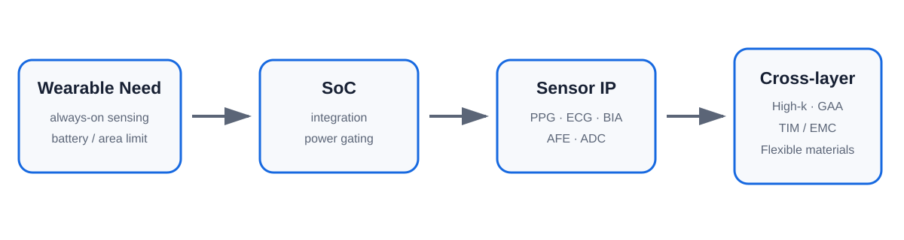
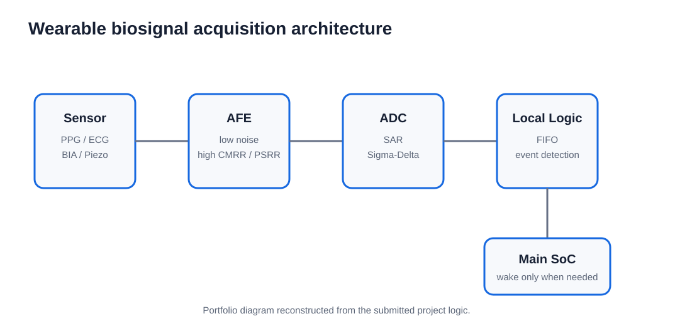

Core question
제한된 배터리 안에서 생체 신호를 항상 감지하면서도 전체 시스템을 항상 켜두지 않으려면 어떤 semiconductor architecture와 process/material technology가 필요한가?
Integration reduces both area and data-movement cost
AP/MCU, sensor/AFE, PMIC, RF 같은 기능을 짧은 interconnect 안에서 연결하고, inactive block을 끌 수 있는 SoC architecture를 저전력의 기본 구조로 분석했습니다.
Biosignal front-end determines always-on efficiency

PPG, ECG, BIA와 같은 입력은 모두 약한 analog signal을 다루므로 AFE, ADC, buffer, power isolation, event logic이 전체 sensor IP efficiency를 결정합니다.
Architecture와 device physics를 동시에 사용
Different layers, same low-power goal
| Example | Project emphasis | Low-power angle |
|---|---|---|
| Samsung | 3 nm GAA + advanced packaging | electrostatics / interconnect |
| Apple | Custom SiP + AOP | power gating / vertical optimization |
| Qualcomm | heterogeneous processing + AON | workload partitioning / on-device AI |
This comparison preserves the submitted 2026 report's framing rather than acting as a live product-spec database.
Low power is also a materials and packaging problem
HfO₂-based High-k는 gate tunneling leakage, TIM/EMC와 고열전도 filler는 SiP thermal path, PDMS/Parylene은 skin-compatible sensor interface와 연결해 분석했습니다.
Always-on intelligence moves toward the sensor edge
Raw data를 계속 main processor로 보내기보다 sensor-side AFE와 threshold/event logic에서 먼저 처리하고, 필요한 순간에만 main SoC를 깨우는 구조를 차세대 wearable sensor IP의 중요한 방향으로 정리했습니다.